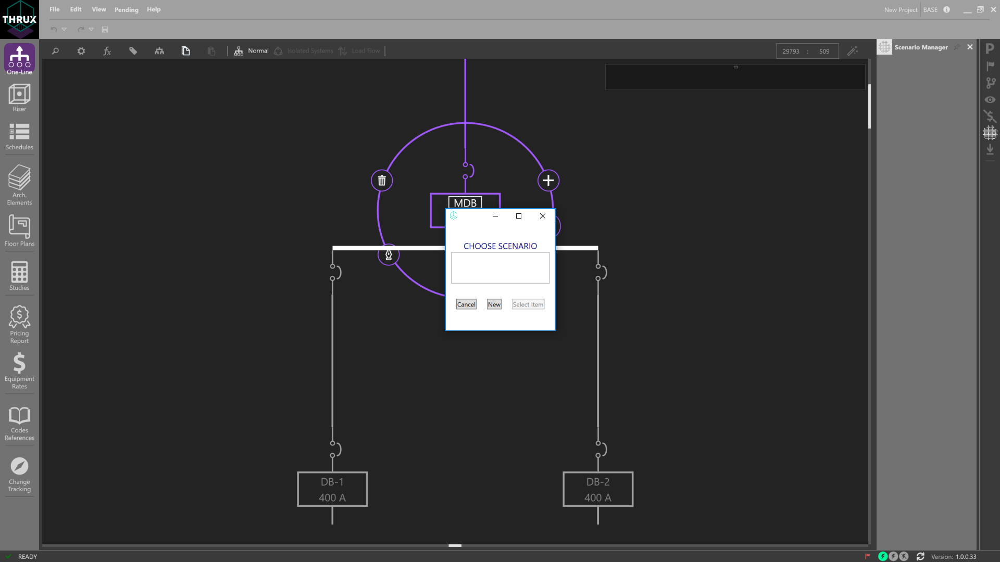
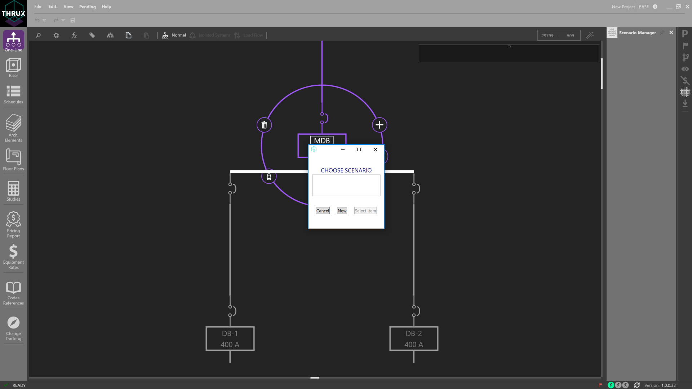
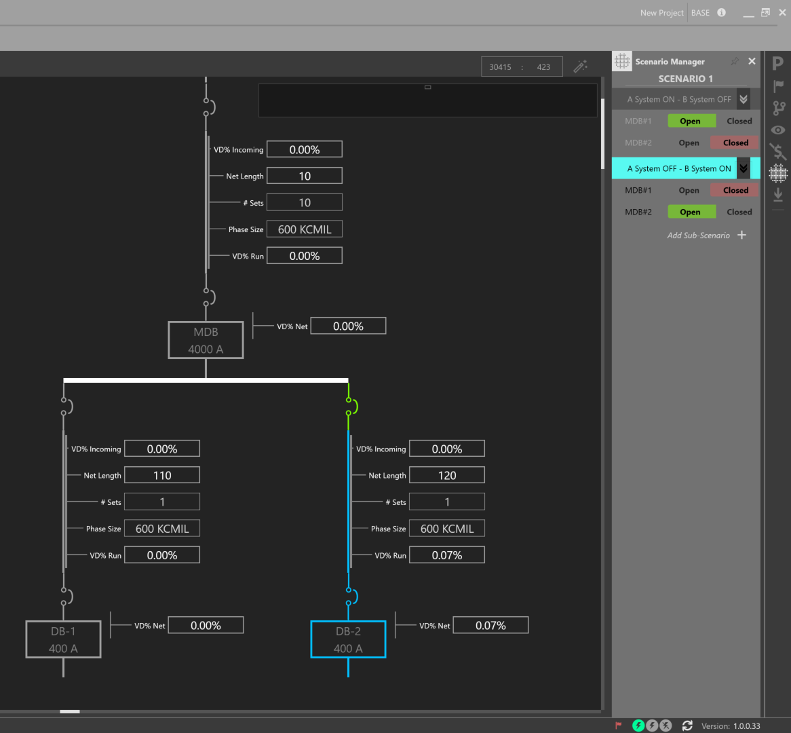
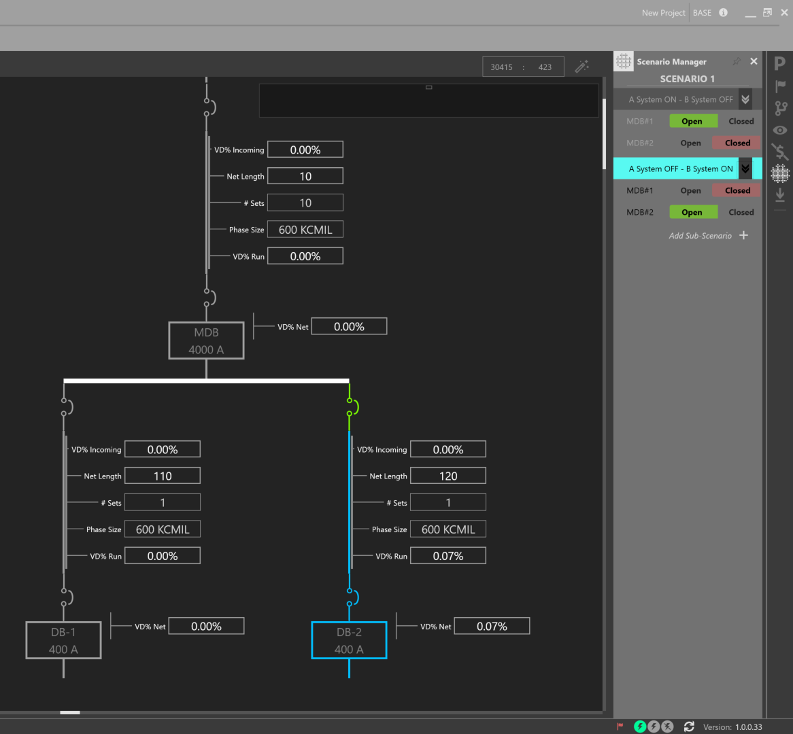

Scenario Manager¶
The Scenario Manager can be used to model different scenarios representing the state of protective devices. It is generally used in conjunction with the One-Line.
For example, a designer may want to perform a load flow study of their electrical system as certain protective devices are opened or closed.
Open the Scenario Manager and show the OCPDs on the One-Line.

Right-click on a protective device to add it to a New Scenario.
 

In each Scenario, toggle the different states of protective devices, and also toggle between different Scenarios as shown below.
 
